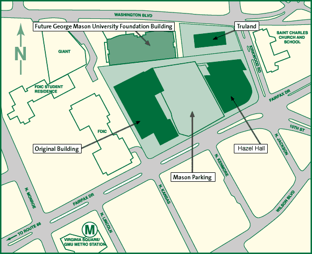

Memorial Events
Sunday, December 9, 2007 at the GMU Arlington Campus, Original Building, Room 329, Arlington, VA.
[Image no longer available: Roy Rosenzweig Celebration]
Directions
The event will be held at the Arlington, Virginia campus of George Mason University, in room 329 of the "Original Building." The Arlington branch campus is located at the intersection of Washington and Fairfax Boulevards, 3401 Fairfax Drive, Arlington. Public transit is recommended, as parking can be tight.

The closest airport is Washington (Reagan) National, and the closest metro stop is the aptly named Virginia Square/GMU on the orange line.
From National Airport: Take the Blue line train towards Addison road. At Rosslyn station, transfer to the Orange line train toward Vienna. Virginia Square/GMU is the third stop.
From Union Station: Take the Red Line train towards Shady Grove. Transfer to the Orange line train toward Vienna at Metro Center. Get off at Virginia Square/GMU
January 5, 2008 at the Annual Meeting of the American Historical Association, Washington, DC.
[Image no longer available: American Historical Association celebration]
Saturday, March 29 at 8:00 AM—“Morning Coffee with Roy Rosenzweig: A Rememberance.,” Annual Meeting of the Organization of American Historians, New York, NY. Details:
- “Presiding: Joshua Brown, The Graduate Center, City University of New York
- “Roy and the Organization of American Historians,” James Horton, George Washington University
- “Roy and George Mason University,” Michael O'Malley, George Mason University
- “Roy and the Center for History and New Media,” Kelly Schrum, George Mason University
- “Roy as Labor Historian,” Gary Gerstle, Vanderbilt University
- “Roy as Radical Historian,” Ellen Noonan, The Graduate Center, City University of New York
- “Roy and Collaborative History,” Elizabeth Blackmar, Columbia University
- “Roy as Humorist,” Jean-Christophe Agnew, Yale University
- “Roy as Mentor,” Elena Razlogova, Concordia University
- “Roy and New Media,” Stephen Brier, The Graduate Center, City University of New York
- “Roy as Public Historian,” Cynthia Copeland, New-York Historical Society
- “Roy and the National Endowment for the Humanities,” Barbara Ashbrook, National Endowment for the Humanities
- “Roy as International Scholar,” Shane White, University of Sydney